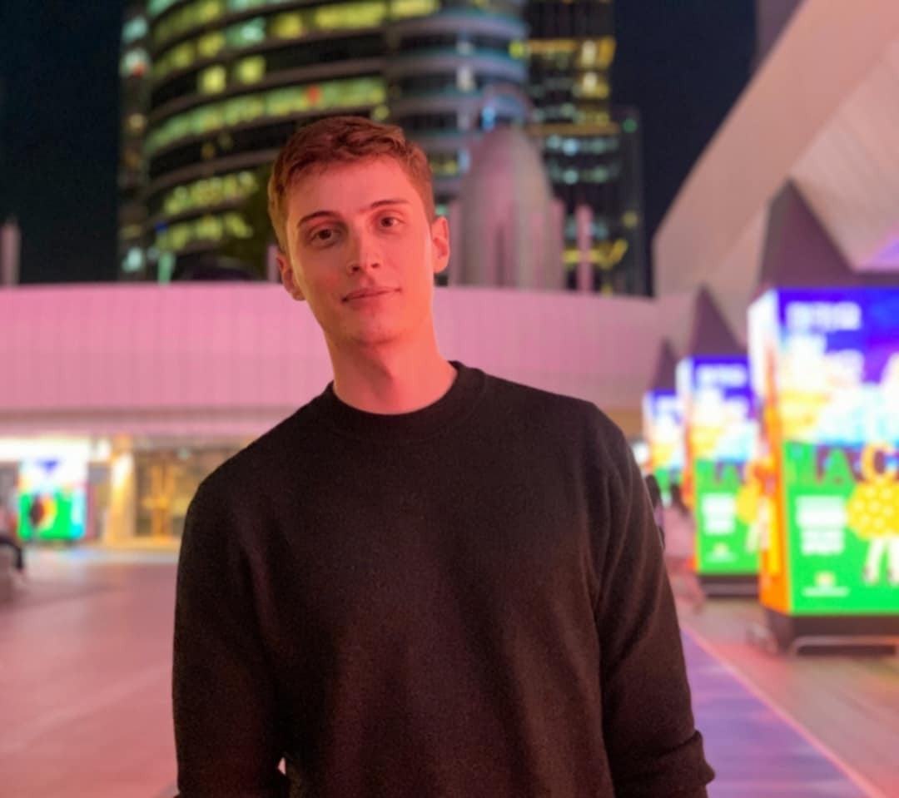

Cédric Caruzzo
AI Research Scientist at Lunit Inc.
Vision Foundation Models · LLM Post-Training · Medical AI

Vision Foundation Models · LLM Post-Training · Medical AI
I'm an AI Research Scientist at Lunit Inc., where I work on foundation models and post-training for medical AI. My work runs across most of the learning pipeline, from self-supervised vision models for histopathology to post-training and alignment of large medical language models. What I care about most is whether these models stay reliable once they leave the benchmark and reach a clinic.
These days I lead post-training for Chain of Evidence, a government-led Korean medical LLM consortium. Before that, I spent my first stretch at Lunit training ViT-based pathology foundation models (DINOv2/v3-style SSL) on hundreds of terabytes of whole-slide images, bringing inference compute down by 60 to 80%. One half of that work was about learning stable representations; the other was about teaching a large model new knowledge without it forgetting what it already knew. The question that ties them together, and one I find more interesting the longer I sit with it, is how trained models hold up or fall apart when the world shifts under them.
My path into research started at Institut Pasteur New Caledonia, where I developed AI methods for pathogen detection with Prof. Nazha Selmaoui-Folcher, work that became a Scientific Reports paper. That brought me to Seoul to join the Pasteur International Unit AI3D, a joint initiative between Institut Pasteur Korea and Institut Pasteur Paris led by Dr. Spencer Shorte and Dr. Christophe Zimmer, where I built computer vision pipelines for high-content screening and drug discovery. I then completed my Master's at the KAIST Graduate School of AI as a Global Presidential Scholar, advised by Prof. Ye Jong Chul in the BISPL lab, developing foundation models for Cell Painting assays.